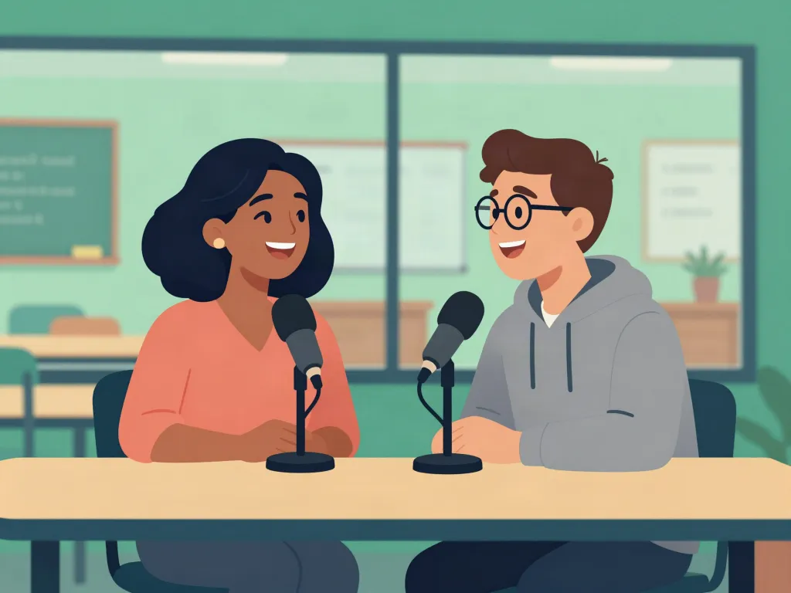
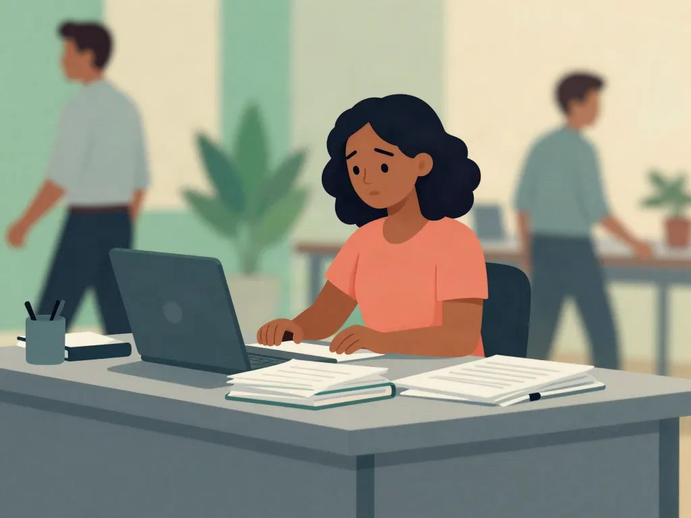
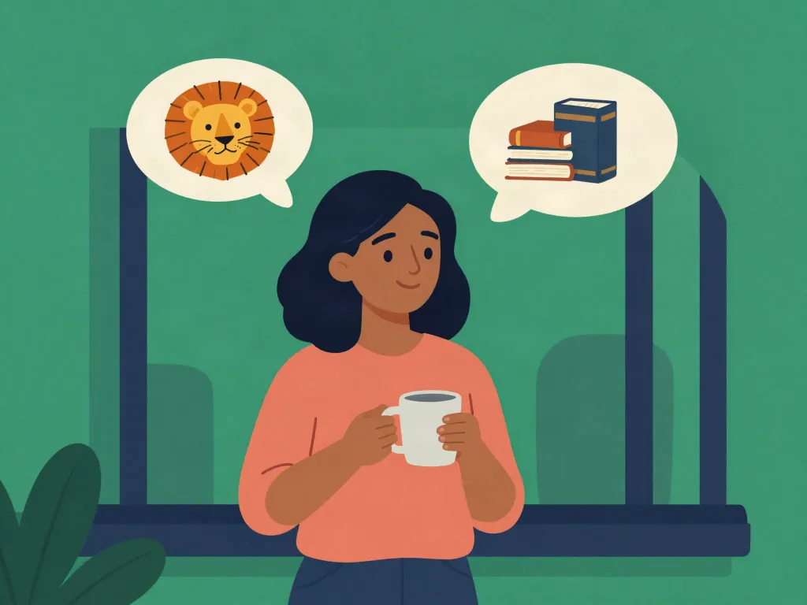
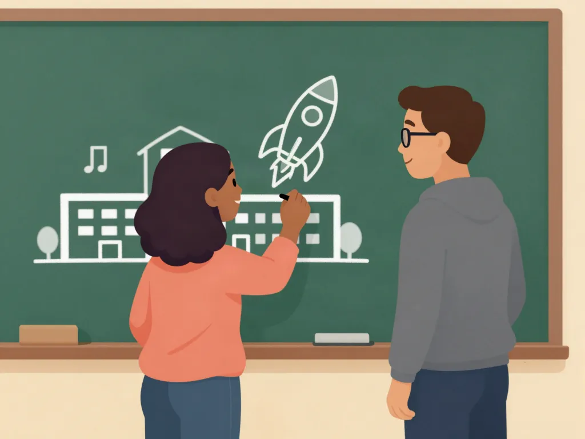
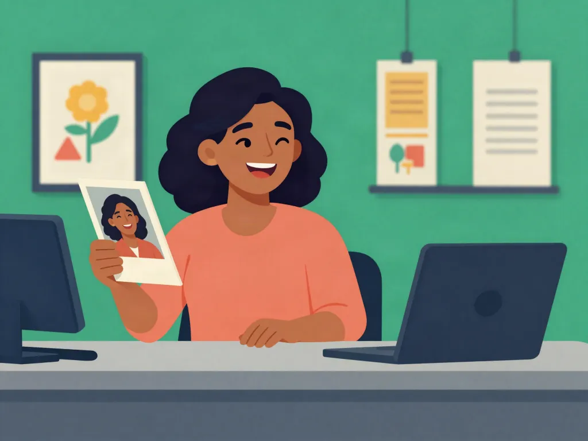
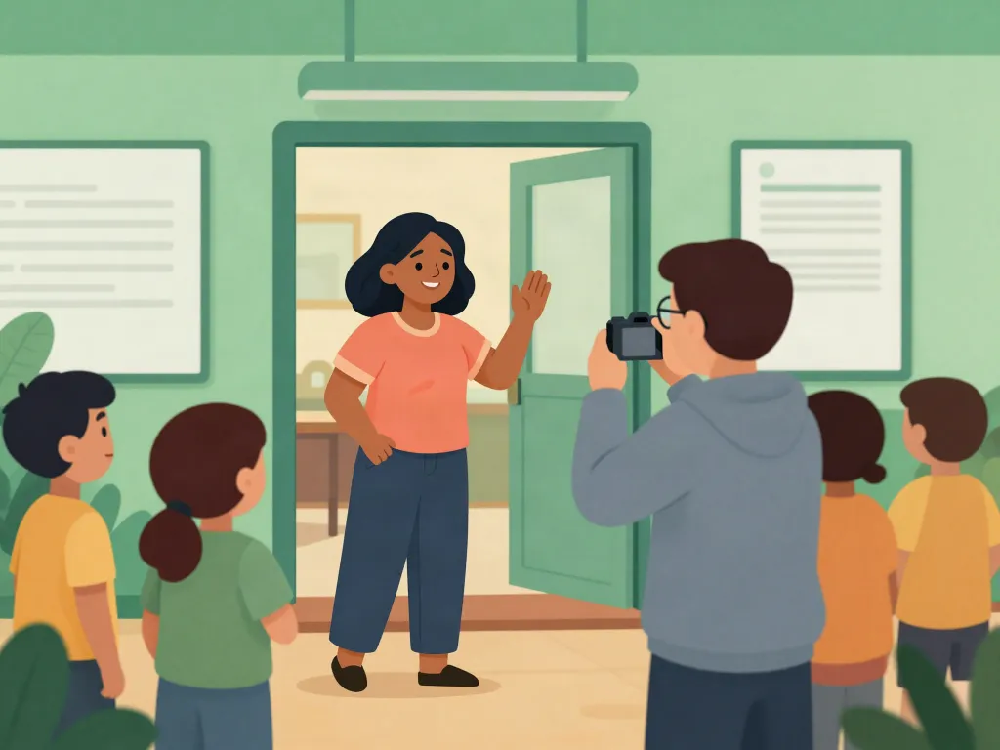

🎓 Looking
Ahead
A conversa final do curso: olhar para trás, dizer o que você queria ter feito diferente e falar do futuro sem medo. Tudo o que você viu no Intermediate, numa entrevista só.
🎭 Diálogo
Passo 1 de 8
🎭 Looking Ahead
🎙️ Num podcast sobre carreira, o Daniel entrevista a Sofia. Há cinco anos ela era tradutora e se sentia invisível; hoje tem a própria escola de idiomas. Ouça antes de ler a tradução.

🎯 Encontre no diálogo:
Vocabulary
As palavras que você acabou de ouvir. Toque para virar a carta.
Key Expressions
Frases prontas para contar a sua história e falar do futuro. Uma por slide.
Passado, desejos e futuro
6 slides com 28 exemplos. Toque no slide para ver em tela cheia; passe com as setas, deslizando ou pelos botões.
Nesta aula
Passado, desejos e futuro

- 1I used to feel invisible
- 2I wish I were braver · I wish I had studied
- 3If I knew…, I would…
- 4If you had told me…, I would have laughed
28 exemplos. Ouça cada frase e repare na parte em destaque.
Padrão 1 de 4
I used to feel invisible

-
I used to feel invisible at work.
Eu me sentia invisível no trabalho.
-
She used to work as a translator.
Ela trabalhava como tradutora.
-
We used to live in a small apartment.
A gente morava num apartamento pequeno.
-
I didn't use to speak English at work.
Eu não falava inglês no trabalho.
-
Did you use to play any sports?
Você praticava algum esporte?
-
He used to be very shy.
Ele era muito tímido.
Padrão 2 de 4
I wish I were braver · I wish I had studied

-
I wish I were braver.
Eu queria ser mais corajosa.
-
I wish I had more free time.
Eu queria ter mais tempo livre.
-
I wish I could speak French too.
Eu queria saber falar francês também.
-
I wish I had studied business.
Eu queria ter estudado administração.
-
She wishes she had started earlier.
Ela queria ter começado antes.
-
I wish I hadn't been so afraid.
Eu queria não ter tido tanto medo.
Padrão 3 de 4
If I knew…, I would…

-
If I knew I couldn't fail, I would open a second school.
Se eu soubesse que não poderia falhar, eu abriria uma segunda escola.
-
If I had more time, I would travel more.
Se eu tivesse mais tempo, eu viajaria mais.
-
If she lived abroad, she would speak English every day.
Se ela morasse fora, ela falaria inglês todo dia.
-
What would you do if you won the lottery?
O que você faria se ganhasse na loteria?
-
If I were you, I would accept the job.
Se eu fosse você, eu aceitaria o emprego.
-
I wouldn't worry if I were you.
Eu não me preocuparia se fosse você.
Padrão 4 de 4
If you had told me…, I would have laughed

-
If you had told me then, I would have laughed.
Se você tivesse me dito naquela época, eu teria rido.
-
If I had studied business, it would have been easier.
Se eu tivesse estudado administração, teria sido mais fácil.
-
If she hadn't started that class, she wouldn't have found her passion.
Se ela não tivesse começado aquela turma, não teria encontrado a paixão dela.
-
We would have arrived on time if we had left earlier.
A gente teria chegado a tempo se tivesse saído mais cedo.
-
If I had known, I would have helped you.
Se eu soubesse, eu teria te ajudado.
-
What would you have done in my place?
O que você teria feito no meu lugar?
Revisão
Uma frase nova de cada padrão

-
Padrão 1
I used to hate speaking in public.
Eu odiava falar em público.
-
Padrão 2
I wish I had learned English as a child.
Eu queria ter aprendido inglês quando criança.
-
Padrão 3
If I spoke better, I would apply for that job.
Se eu falasse melhor, eu me candidataria àquela vaga.
-
Padrão 4
If she had quit earlier, she would have saved time.
Se ela tivesse largado antes, teria economizado tempo.
🇧🇷 How do you say it in English?
Leia a frase em português e escreva em inglês, com as palavras e os padrões da aula. Depois de conferir, a resposta certa aparece escrita.
🗨️ Let's Talk!
Responda com suas próprias palavras. Clique num "starter" pra começar a frase, use as palavras sugeridas e treine em voz alta. 🎤
Practice
Parte 1 de 2 — 8 perguntas. O que você diria nessa situação?
✏️ Parte 2 — Complete a frase
Escreva a palavra que falta, como você viu na aula.
Great job!
🔤 Complete the text
Um texto com partes faltando. Os pedaços estão na caixa: escolha cada um e encaixe no lugar certo.
Speak & Practise
Pressione ▶️ para ouvir e repita em voz alta.
Homework
Lesson 20 — Looking Ahead
São 8 tarefas, uns 20 minutos. No fim, você ganha um card para mandar para o seu teacher.
Word Order
Monte a instrução na ordem correta.
Match the Vocabulary
Conecte a palavra ao seu significado.
Error Correction
Reescreva a frase corrigindo o erro.
❌ Corrija:
Corrija a frase: "If you had told me, I would laughed."
Onde você se vê daqui a cinco anos?
Escreva 4 ou 5 frases: como você era antes (used to), o que gostaria de ter feito diferente (I wish I had), o que faria sem medo de falhar (If I knew…, I would) e o seu plano (going to).
🎓
Você chegou ao fim do Intermediate!
Antes da prova final, faça a aula de revisão: ela junta tudo o que você viu nas 20 aulas.